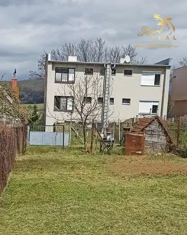
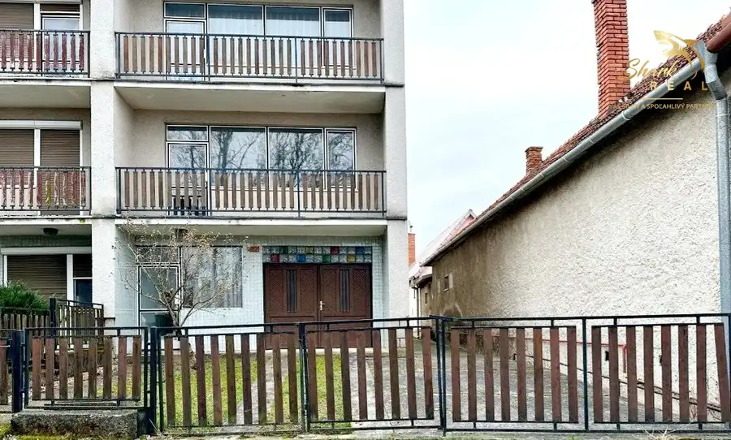
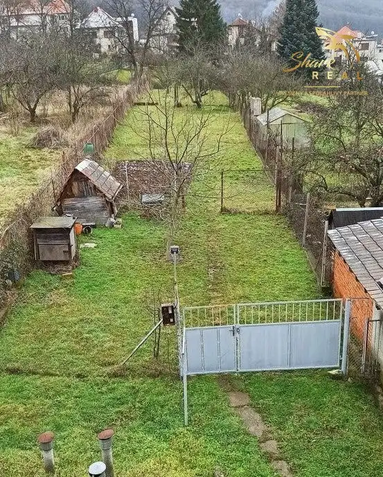

SUPER CENA, Rodinný dom pri Zlatých Moravciach
Obyce



- Plocha102 m²
- StavČiastočná rekonštrukcia
- VlastníctvoOsobné
O nehnuteľnosti
Shark real Vám ponúka na predaj rodinný dom v obci Obyce. Jedná sa o malú obec v údolí rieky Žitava v blízkosti okresného mesta Zlaté Moravce. V obci sa nachádza materská a základná školy, pošta, lekáreň a zdravotné stredisko, knižnica, dokonca aj posilovňa.Dom je súčasťou dvojdomu postaveného v roku 1982. Súčasťou rodinného domu je pozemok s rozlohou 761 m2. Jedná sa o udržiavanú záhradu a spevnenú plochu.Rodinný dom je trojpodlažný z tehlového muriva a zastavanou plochou 102 m2. Na 1. podlaží sa nachádza vstup so schodišťom, kotolňou, dielňou a špajzou. Na 2. podlaží sú dve izby, kuchyňa, kúpeľňa a toaleta. Na 3. podlaží sú tri izby, kúpeľňa a toaleta. Na každom poschodí sa nachádza priestranná loggia. Súčasťou rodinného domu je aj garáž so vstupom z prednej časti domu po asfaltovej prístupovej ceste. Rodinný dom bol čiastočne rekonštruovaný v roku 2013 (menená PVC krytina), napriek tomu je potrebná celková rekonštrukcia. Rodinný dom má ústredné kúrenie riešené plynovým kotlom (kotolňa). Je napojený na plyn, vodovod a elektrinu. Odpad je riešený vlastnou žumpou. V súčasnosti je možnosť napojenia na verejnú kanalizáciu. Možnosť kúpy tejto nehnuteľnosti je aj prostredníctvom HÚ s výhodným financovaním a to priamo v našej realitnej kancelárií.Ceny uvedené v ponuke sú konečné a bez akýchkoľvek ďalších poplatkov.V cene nehnuteľnosti je zahrnuté:- kompletný právny servis spojený s predajom nehnuteľnosti- vyhotovenie rezervačnej, kúpnej zmluvy a návrhu na vklad do katastra nehnuteľností.- uhradenie správneho poplatku za návrh na vklad kúpnej zmluvy do katastra nehnuteľností- uhradenie poplatku za osvedčenie podpisov na kúpnej zmluve- poradenstvo / vybavenie financovania / pomoc pri znaleckom posudkuShark real Váš silný s spoľahlivý partner.Bližšie informácie, prípadne termín obhliadky Vám rada poskytnem na tel. č. 0915 084 737 alebo prostredníctvom emailu strapakova@sharkreal.sk
Parametre
- Druh
- Rodinný dom
- Dátum zverejnenia
- 31. 05. 2023
- Energetický certifikát budovy
- nie je
- Plocha pozemku
- 0 m²
- Počet nadzemných podlaží
- 2
- Rok výstavby
- 1982
- Stav nehnuteľnosti
- Čiastočná rekonštrukcia
- Terén pozemku
- Rovinatý
- Typ
- Predaj
- Typ konštrukcie
- Tehlová
- Vlastníctvo
- Osobné
- Zastavaná plocha
- 102 m²
- Úžitková plocha
- 102 m²